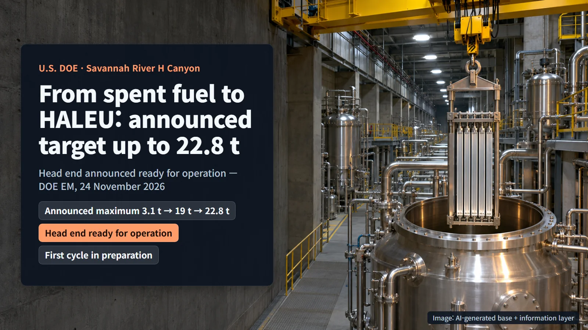
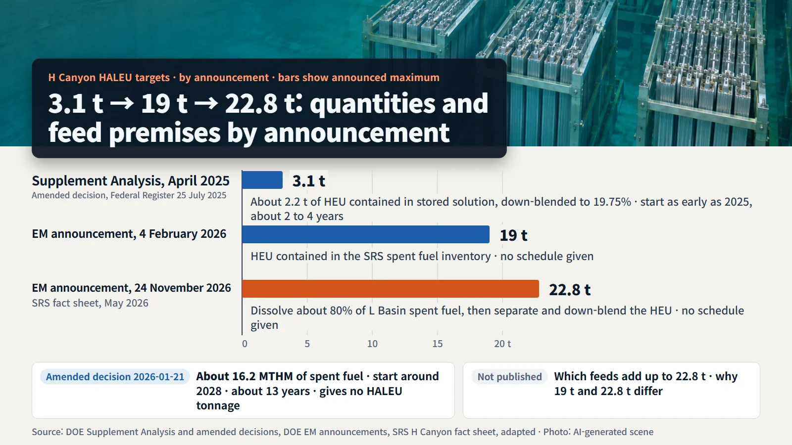
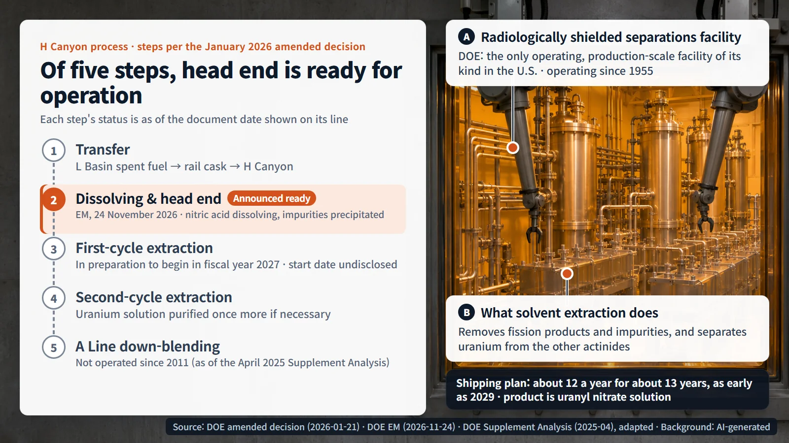
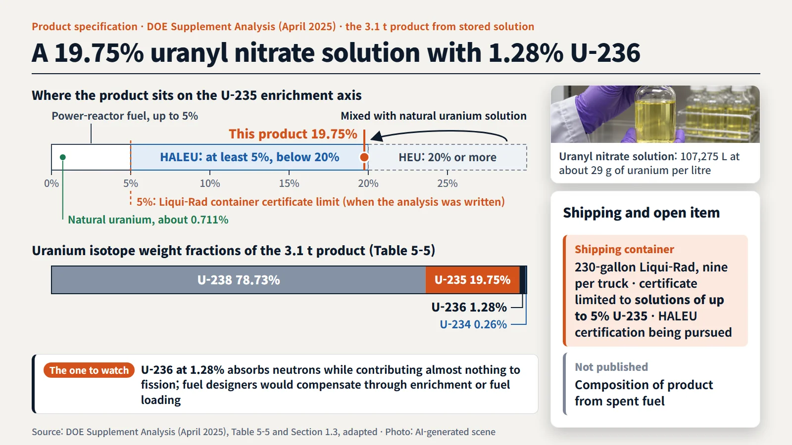

United States · HALEU Supply
From Spent Fuel to HALEU: H Canyon's 3.1 t, 19 t and 22.8 t Announcements and Their Feed Premises
DOE says H Canyon's head end is ready to operate; its 3.1 t, 19 t and 22.8 t HALEU figures come from separate announcements with their own feed premises, and no year-by-year schedule has been published.
Advanced-reactor news tends to raise one follow-up question: the reactor is designed, so where will its fuel come from? On 24 November 2026 the U.S. Department of Energy (DOE) Office of Environmental Management (EM) announced that the head-end equipment at H Canyon is ready for operation. H Canyon is the chemical separations facility at the Savannah River Site (SRS), and head end is the first process in a plan to recover uranium from stored spent fuel as feed material for advanced-reactor fuel. A route from government-held spent fuel to a fuel supply now has a first process step in place, which matters to reactor developers and fuel fabricators waiting for material.
The facility's production target, however, appears as 3.1 t, 19 t or 22.8 t depending on the document. The sections below cover the quantity and feed premise in each announcement, how far the process is ready, and the form of the product.

3.1 t, 19 t, 22.8 t: quantities and feed premises by announcement
First, the terms. High-assay low-enriched uranium (HALEU) is uranium in which the share of fissile uranium-235 (U-235), the enrichment, is at least 5% and below 20%. According to DOE, today's power reactors run on fuel enriched up to 5%, and most U.S. advanced reactors need HALEU. H Canyon makes it by down-blending: highly enriched uranium (HEU), enriched to 20% or more, is mixed with natural uranium (about 0.711% U-235) to lower the enrichment.
| Announced maximum | Document and date | Feed and premise | Schedule given |
|---|---|---|---|
| 3.1 t | Supplement Analysis of April 2025; amended decision in the Federal Register of 25 July 2025 | About 2.2 t of HEU contained in solution stored in H Area, down-blended to 19.75% | Start as early as 2025, about 2 to 4 years |
| 19 t | EM announcement of 4 February 2026 | HEU contained in the SRS spent fuel inventory | None given |
| 22.8 t | SRS fact sheet of May 2026; EM announcement of 24 November 2026 | Dissolve about 80% of the spent fuel in the L Basin storage pool, then separate and down-blend the HEU | None given |
(Source: DOE Supplement Analysis and amended decisions, DOE EM announcements, SRS H Canyon fact sheet, adapted)
The 3.1 t figure is calculated from HEU contained in solution that was dissolved earlier and kept in tanks, while 19 t and 22.8 t both refer to spent fuel stored at SRS. Why 19 t and 22.8 t differ could not be confirmed from public documents.
The formal decision for the spent fuel is the amended decision signed on 21 January 2026. It commits H Canyon to processing about 16.2 metric tons of heavy metal (MTHM) of aluminum-clad spent fuel, with the remaining 13 MTHM staying in wet storage. MTHM measures the mass of heavy metal such as uranium inside spent fuel, a different basis from tonnes of finished HALEU. Processing would begin around 2028 and continue for about 13 years at an average of 1.25 MTHM per year. The decision gives no HALEU tonnage.
Simply adding two of the figures gives 19 t + 3.1 t = 22.1 t, which is 0.7 t short of 22.8 t. Which feeds add up to 22.8 t has not been published.

Five steps from spent fuel to HALEU solution
H Canyon began operating in 1955, and DOE describes it as the only operating, production-scale, radiologically shielded chemical separations facility in the United States. It also has a track record: from 2003 to 2011 it down-blended 14.9 t of HEU into 301 t of low-enriched uranium (LEU) for commercial power reactors. The process set out in the amended decision runs in this order.
- Step 1, transfer: spent fuel from L Basin travels to H Canyon in a cask on a rail car.
- Step 2, dissolving and head end: the fuel is dissolved in hot nitric acid, gelatin is added to precipitate silica and other impurities, and the solution is adjusted with nitric acid and water.
- Step 3, first-cycle solvent extraction: fission products and impurities are removed, and uranium is separated from the other actinides.
- Step 4, second-cycle solvent extraction: the uranium solution is purified once more if necessary.
- Step 5, down-blending: in the A Line equipment in H Area, the solution is mixed with natural uranium solution to bring it below 20% U-235.
The equipment announced as ready for operation is the head end in step 2. EM said the team is preparing to begin first-cycle operations during fiscal year 2027, which began on 1 October 2026. The start date has not been disclosed. As of the April 2025 Supplement Analysis, the A Line in the last step had not operated since 2011; its status as of November 2026 could not be confirmed from public documents.

The product is a liquid: composition and shipping containers
The final product leaving H Canyon is uranyl nitrate solution, a liquid in which uranium is dissolved as a nitrate. The Supplement Analysis calculated the 3.1 t product as 107,275 L of solution at about 29 g of uranium per litre. Turning that solution into reactor fuel is the job of the fuel fabricator that receives it.
Table 5-5 of the Supplement Analysis gives the uranium isotope weight fractions of the 3.1 t product: 19.75% U-235, 78.73% U-238, 1.28% U-236 and 0.26% U-234. The one to watch is U-236. It forms in uranium that has been used in a reactor, and it absorbs neutrons while contributing almost nothing to fission. A 19.75% product from this route can therefore behave differently from freshly enriched HALEU, and fuel designers would compensate through enrichment or fuel loading once product analyses are available. The published composition applies to the 3.1 t product made from stored solution; the composition of product from spent fuel has not yet been published.
Shipping has its own open item. The Supplement Analysis expected 230-gallon Liqui-Rad containers, nine per truck, and calculated about 14 truck shipments for the 3.1 t product. When the analysis was written, that container's certificate was limited to solutions of up to 5% U-235, and design and certification of a container able to carry HALEU were described as being pursued. Whether certification has since been granted could not be confirmed from public documents. The shipping date depends on this certification as well as on the production equipment.

How much by the early 2030s: a worked scenario and the signals to watch
DOE has not published year-by-year HALEU supply. The amended decision says HALEU from spent fuel would ship about 12 times a year for about 13 years, starting as early as 2029. Add three assumptions. First, the full 19 to 22.8 t comes from the 16.2 MTHM covered by the amended decision. Second, that quantity is separate from the 3.1 t from stored solution. Third, the same amount ships every year for 13 years from 2029.
Under those assumptions, five of the 13 years have passed by the end of 2033. The calculation gives 19 to 22.8 t × 5/13 ≈ 7.3 to 8.8 t, and adding the 3.1 t from stored solution gives about 10 to 12 t. The three assumptions are premises set for the calculation and public documents contain nothing that confirms them, so this value is best used as a reference point alongside the announced 22.8 t target.
Three signals lie ahead. The first is an announcement that first-cycle operations have begun; fiscal year 2027 ends on 30 September 2027. The second is certification of a shipping container for HALEU. The third is publication of analyses for product from spent fuel, together with the announcement of a first shipment. For any HALEU supply target, the feed and enrichment behind the number, and the product form and means of transport, show how far the target is from actual supply.